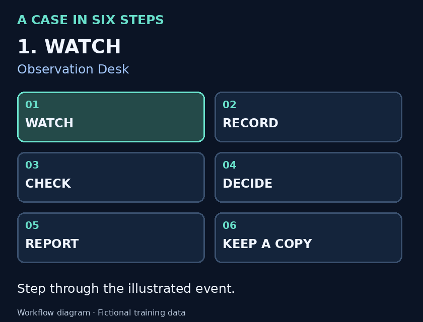

Learn the process, one step at a time.
Watch an example, write the facts, check the records and prepare a clear report. You do not need to know how to code.
Fictional training only. No real CCTV, people or company records are used. This independent project is not endorsed by Active8 Wireless or Metro by T-Mobile.
Open the demo in a separate tab and keep this guide beside it. Both work from the extracted project folder.
First time opening the project?
- Download the ZIP and extract the entire folder.
- Open this START_HERE.html file in a browser.
- Use Open the working demo above. Keep all extracted files together.
No account, payment or installation is needed. If GitHub shows code, download and extract the project first.
Try one decision
The package, quantity, destination and movement time match. The approval happened before the exit. What should you do?
This is a practice question with an answer key, not an independent hiring assessment.
What do the unfamiliar words mean?
| QA | Quality assurance: checking work and recording what you find. |
|---|---|
| Verification | Checking an observation against relevant records. |
| Escalation | Asking an authorized supervisor or colleague to take action. |
| Disposition | The written outcome explaining how a case was closed. |
| Carry-over | An older case that still needs attention. |
| UTC | A common time reference for comparing records from different timezones. |
| JSON backup | A complete text copy of the records and history. There is no automatic restore button. |
This repeating diagram illustrates the workflow; it is not a recording of the app. Hide it to stop viewing movement.
